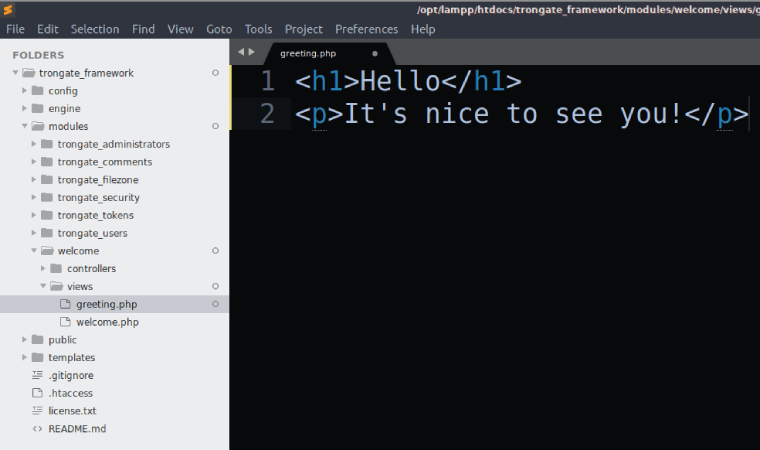

Let's have a concrete example of a view file being used! Here, our goal is to add a 'greeting' method inside our (default) welcome controller.
As a reminder, by default, a fresh installation of Trongate will load the 'welcome' module/controller. When you download the Trongate framework, your welcome controller file will contain the following code:
<?php
class Welcome extends Trongate {
function index() {
$this->view("welcome");
}
}
Of course, in the instance above, our index() method would be invoked whenever somebody visits the app homepage. As you can see, the index() method simply loads up a view file. The view file being called is welcome.php. We know that this is the name of the file since 'welcome' is being passed into the view method as an argument.
Now we're going to write our own custom method and add it onto the welcome controller. We'll call our method 'greeting'. Below is the code for our 'greeting' method:
function greeting() {
$this->view("greeting");
}
The greeting method, when invoked, looks inside the (module's) view directory for a file called 'greeting.php'. If the file is found then the file will be displayed on the screen.
Adding our new greeting method onto the 'welcome' controller means that our controller will have the following code:
<?php
class Welcome extends Trongate {
function index() {
$this->view("welcome");
}
function greeting() {
$this->view("greeting");
}
}
Now, create a new file inside of your views directory called greeting.php. Then, add some HTML code onto your view file. Just a simple headline (using an h1 tag) and a paragraph will be sufficient. For example,

So, if you have followed along then you should have a file called 'greeting.php' inside the views directory of your welcome module.
To display your view file (strictly speaking, we'll be 'invoking the view method'), open your browser and navigate to your main website address followed by /welcome/greeting. For example:
http://localhost/your_app/welcome/greeting
This should produce output similar to the following: